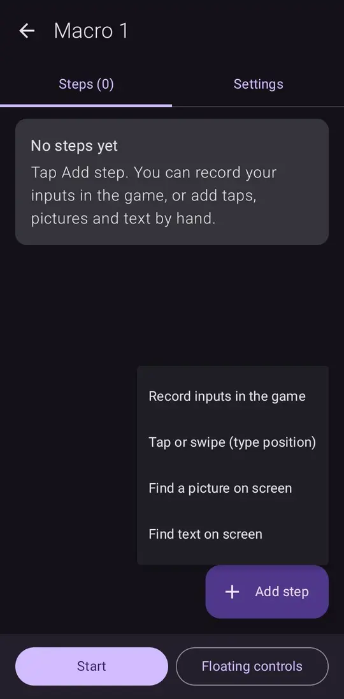
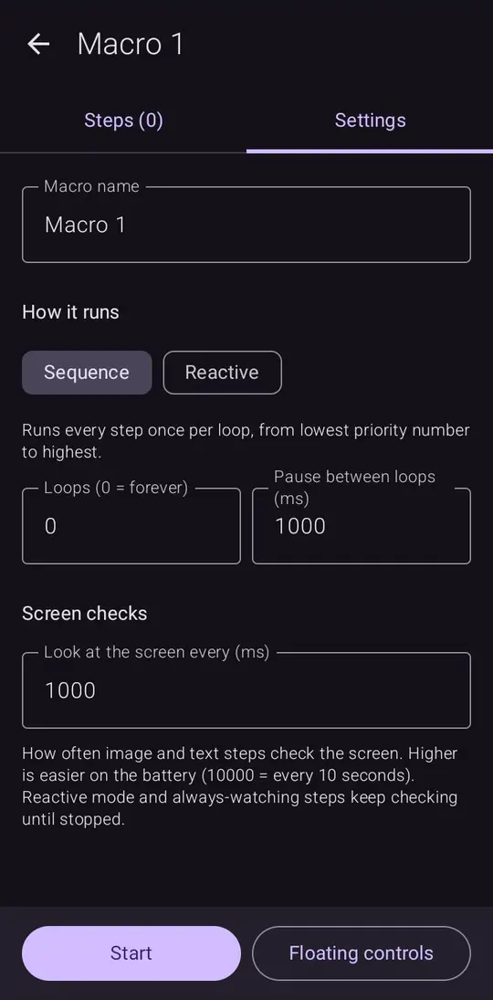
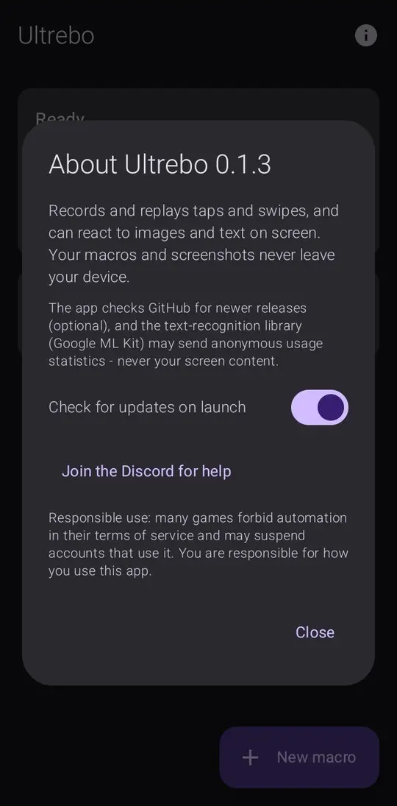

Record your taps and swipes, replay them on a loop, and let your phone react when a button or some text shows up on screen. Built for repetitive game tasks like tower-defense farming.
Android 8.0 or newer. Not available for iPhone, because iOS does not let apps tap other apps.
Play normally with a small floating bar on top. Ultrebo saves each tap and swipe with the pauses between them.
Change positions, delays, repeats and order. Test a single step. Switch steps on and off.
Crop a button or icon from your screen and Ultrebo taps it whenever it appears.
Type the words to look for (like "I'm here") and it taps them when they show up.
Keeps checking in the background while your macro runs. Pause and carry on, or restart the macro, when a pop-up appears.
Set how often it looks at the screen, from several times a second to every few seconds, to save battery.



Ultrebo asks for a few sensitive permissions because tapping for you needs them. Here is exactly what each one is used for, and nothing else. See permissions explained in detail.
| Permission | What it is used for |
|---|---|
| Accessibility service | This is how every auto-clicker app taps for you. Ultrebo uses it only to perform the taps and swipes in your macros and to show its floating RUN / REC bar. It does not ask for permission to read the content of other apps. |
| Screen capture optional | Only needed for image and text steps, so Ultrebo can look at the screen and find your target. Frames are checked in memory on your phone and thrown away. The only picture ever saved is the small region you crop yourself. Android asks you again each time the app restarts. |
| Notifications | Android requires a visible notice while screen capture is on. That is the only notification Ultrebo shows. |
| Internet | Used to ask GitHub whether a newer version exists, and to download it if you tap Update. You can turn the check off. The text-recognition library (Google ML Kit) runs on your phone, but it may send anonymous usage statistics to Google, never your screen content. |
| Install unknown apps optional | Only used by the in-app updater, to install Ultrebo's own new version. Android only accepts an update signed with the same key as the app you have. |
Your macros and cropped images are stored privately on your phone and are never uploaded. There are no ads and no accounts at the moment.
The short version is below. For step-by-step help, see the full install guide.
Ultrebo-….apk.Everything it does is described above and in the open-source code. It has no ads or accounts and does not upload your macros or screenshots. As with any app, only install it if you are comfortable with that.
Possibly. Many games forbid automation in their rules and may suspend accounts that use it. Ultrebo does not hide itself or avoid detection. You are responsible for how you use it.
It is the only official way an Android app can tap and swipe on other apps. Every auto-clicker uses it.
No.
No. Apps that automate taps are very restricted there, so Ultrebo is distributed from GitHub.
Join the Discord server and open a support ticket, or open an issue on GitHub. Say your phone model and Android version.